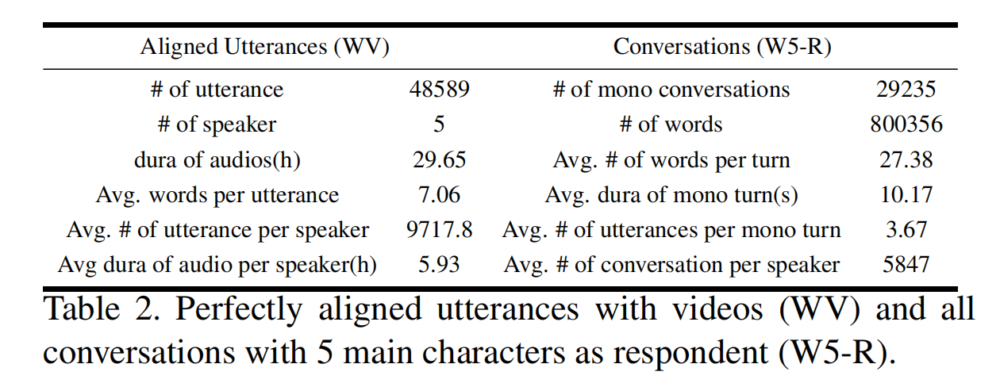
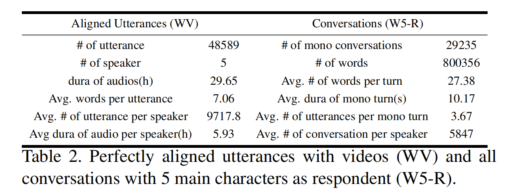

Overview Video
We propose a novel task, named Deep Personalized Character Creation (DPCC): creating multimodal chat personalized characters from multimodal data such as TV shows.
DPCC takes the multimodal stimuli as input, and responds with a personalized multimodal output. Given the same input, different Deep personalized digital Characters (DeepCharacters) should provide responses that well reflect their individual trait, respectively.
We further collect a character centric multimodal dialogue dataset, named Deep Personalized Character Dataset (DPCD), from TV shows. For each modality (text、audio、video), we use automatic tools to extract the basic feature, reduce the noise, and roughly align modalities. Then manually check the quality of the alignment between text and audio/video modality.
Different from the existing multimodal dataset applied to different people, our DPCD focus on the main characters and can provide almost an order more (9,718 utterances per character).
 

Meanwhile, our videos are specifically cropped to focus on active talking face, excluding other characters and complicated background scenes. Our audios are also elaborately filtered to better capture the speaker’s voice and tone. Our texts are labeled with speaker identity and conversational context, available for further expression and emotion modeling.
As we offer sufficient utterance data and conversational data, it is possible to model the character’s speaking manner and interaction habits.
On DPCD, we present a baseline method for the DPCC task and create 5 Deep personalized digital Characters (DeepCharacters) from Big Bang TV Shows.
Multimodal Features Encoding
We train a multimodal feature representation model to capture each modality’s distinctive stylistic information. Following MISA, one-dimensional semantic features are previously extracted from each utterance or audio/video clip, then projected into a modality-specific space utilizing feature projection model Ep. Ep is pretrained on a multimodal emotion recognition task for better understanding in multimodal correlation. The textual / acoustic / visual features are encoded by Ep to form multimodal conversation context input ut,a,v.
Personalized Textual Response Generation.
We finetune the pretrained model conversational response generation DialoGPT on a single character’s multimodal conversation context input ut,a,v to model his personalized interaction pattern and speaking style and finally generate the specific character’s possible response to the multimodal input context.
Personalized Text to Speech
We use the TTS model proposed by Jia et al. to utter the generated textual response in the target character’s voice and tone. For each character, the TTS model is finetuned on wave files and utterances collected from that specific character to capture unique speech patterns.
Acoustic-Visual Synchronization
Utilizing the acoustic-visual synchronization model, we synthesize our generated textual response and corresponding audio to the final multimodal response. We adopt the pretrained Pose-Controllable Talking Face Generation Model(PC-AVS) proposed by Zhou et al. The identity reference and pose reference are randomly selected from the target character’s video clips and lip movements are synchronized with the wave file generated by the personalized speech synthesis model. In this way, all generated modalities are aligned and synthesized to a final multimodal personalized response.
We conduct both subjective and objective experiments to evaluate the multimodal response from DeepCharacters in terms of characterization and quality. The survey shows that three characters Sheldon, Leonard and Penny, are more impressed and related conclusion should be more reliable.
Since the textual response lays the foundation of multimodal response, and psychologists think that language can express inner thoughts and feelings, so it’s possible to distinguish a specific character according to his/her utterances. Therefore, we conduct experiments on both textual and multimodel ones.
Characterization Evaluation
Characterization of textual responses
Following a previous work on character classification, we use SAGE model to derive weights for words uttered by the characters. Then we use a pretrained basic BERT model to encode the reweighted virtual documents into 128-dimensional embeddings as the final representation of one sample of the given character’s response. We perform t-SNE on these sampled representations from all the 5 characters and 5 DeepCharacters.

Intriguingly, the clusters of responses DeepCharacters aligns quite well with the ones of the corresponding characters, respectively. This verifies that the created DeepCharacters can generate highly personalized textual responses, well capturing the speaking style and word preference.
For human evaluation, we randomly select 50 response samples from DeepSheldon, DeepPenny and DeepLeonard respectively, and each is paired with general response generated by DialoGPT as a non-personalized baseline, and response generated by other character model as an untargeted character comparison. Each question is presented to at least3 judges. The judges are asked to rank each response pair for how well the response matches the given material in speaking style, decision-making style and emotion tendency, using a 3-point Likert-like scale following.

All three targeted DeepCharacters gain more preferences over non-personalized DialoGPT and untargeted DeepCharacters, which shows our DeepCharacter’s ability of capturing a specific character’s personality and speaking style.
Characterization of multimodal responses
We use DialoGPT finetuned on whole DPCD corpus instead of any specific character, and unfinetuned TTS model as the neutral baseline, while the inference of acoustic-visual synchronization model remains the same as DeepCharacter. We randomly select 10 video clips generated by DeepSheldon, DeepLeonard and DeepPenny, respectively. Like PC-AVS, the total 30 video clips, paired with baseline results, are handed to all 30 judges. The judges are asked to rank each multimodal response pair base on how well the response matches the target character in terms of speaking style, tone and identity, considering all three modalities. comprehensively.

All three targeted DeepCharacters gain more preferences over the neutral baseline, which shows our DeepCharacter’s ability of generating characterized multimodal responses.
Quality evaluation
Quality of textual responses
Following DialoGPT, we perform automatic evaluations using several popular standard evaluation metrics, including SacreBLEU and Perplexity. We also use Entropy and Dist-n to evaluate lexical diversity. We calculate automatic evaluation scores for Deep Sheldon, DeepPenny, DeepLeonard, DeepHoward and DeepRaj separately.
In comparison, we evaluate DialoGPT’s results with the same contexts, as a non-personalized general response. We also finetune DialoGPT on the mixed corpus of these characters, to bridge the performance gap caused by corpus difference and serve as an un-targeted response. We additionally evaluate the lexical diversity and perplexity of the characters’ original corpus, to learn text distribution.

All DeepCharacters achieve a higher score in lexical diversity than original DialoGPT, and are close to respective original corpus. Both generated responses and original corpus have higher perplexity than DialoGPT’s results, illustrating the complexity and distribution diversity of our DPCD, which can also be verified by the results of finetuned DialoGPT. This also demonstrates DeepCharacter’s ability to fit text distribution of the original corpus.
We also conduct human study to evaluate our model’s ability in generating high quality characterized textual responses. We first evaluate the generated text quality from the views of fluency, context relevant and personalized/emotional degree. The differences between DeepCharacter and DialoGPT in these three criteria are less significant, indicating that our DeepCharacter can generate responses that are as fluent, reasonable, and emotional as DialoGPT.
The above results demonstrate that our DeepCharacters achieve comparatively high score in lexical diversity, reasonalibity, fluency and emotionality of generated texts.
Quality of generated multimodal responses
We conduct user study to evaluate the multimodal quality of the generated videos. The data and experiment settings remain the same with the video characterization user study, and the judges are required to rank each multimodal response pair for the responses’ performance in language fluency, naturalness and realness.
All three DeepCharacters gain more preferences over comparative baseline, which confirms our DeepCharacter’s ability of generating high quality multimodal responses.
To study how the multimodal input affects the response,we take the same textual stimuli mixed with different video/audio context. Instead of generating the same response to the shared text, our model gives different results not only in response to the textual context, but also related to the emotion expressed in the video/audio context.

Extra modalities can offer more effective information, such as the speaker’s facial expressions, voice or tone, which can better express the speaker’s emotion and will certainly affect natural response generation. Given multimodal inputs, the model can obtain more comprehensive information from the conversation context, thus understanding the character’s interaction pattern and personality better, generating diverse and more personalized responses.